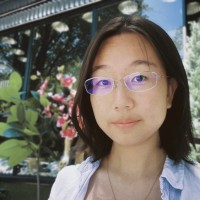
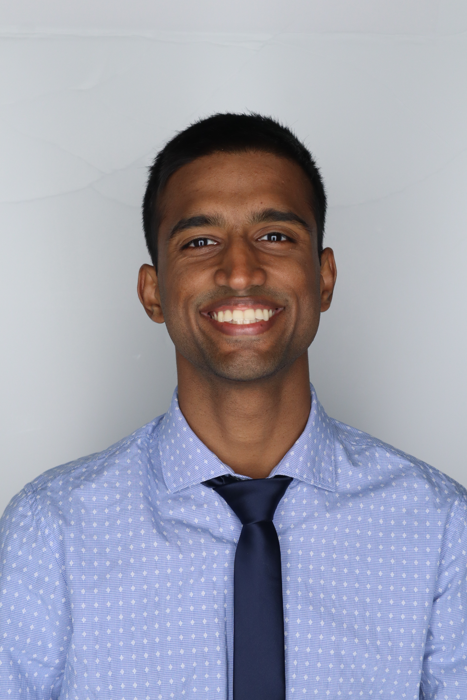
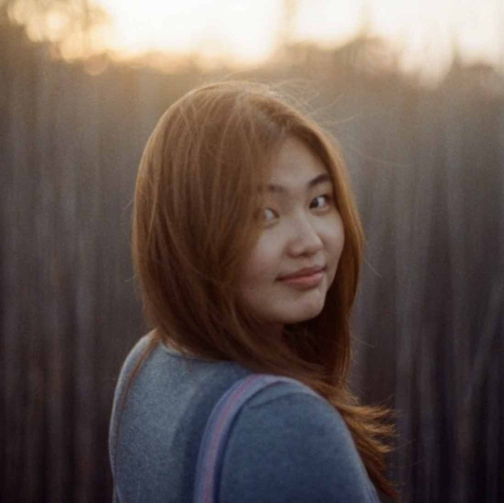
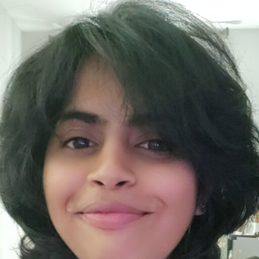
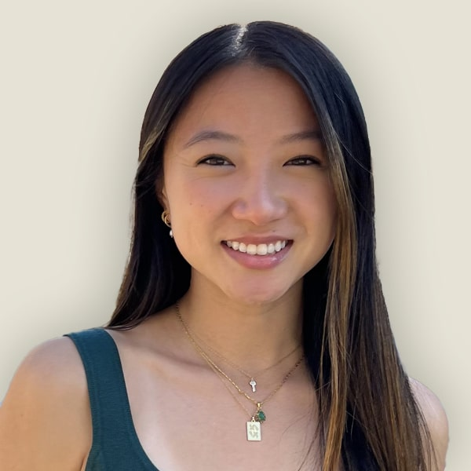
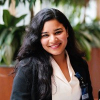
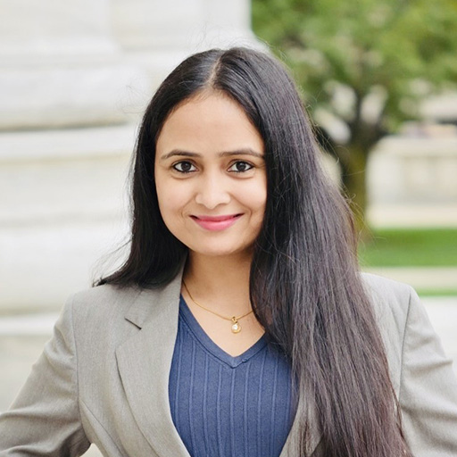

Leadership Roles
I enjoy mentoring students at all stages, from undergraduate researchers to graduate trainees, helping them develop experimental, computational, and scientific communication skills.

Yida Lu
Undergarduate Student
Training: In-vivo Neural Recording, Singal processing, Rodent surgeries, Immunohistochemistry
Role: Mentor
Years: 2026-2027
Current Position: Undergarduate Student, Carnegie Mellon University

Lloyd Lobo
Doctoral Student
Training: Imaging, tissue phantoms and sample preparation, in vivo brain imaging
Role: Mentor
Years: 2022–2026
Current Position: Final-year Ph.D. Student, Carnegie Mellon University

Zoe White
Master Student
Training: In-vivo Neural Recording, Singal processing, Rodent surgeries, Immunohistochemistry
Role: Mentor
Years: 2024–2026
Current Position: Ph.D. Student, North-Western University

Gina_Seo
Master Student
Training: In-vivo Neural Recording, Singal processing, Rodent surgeries, Immunohistochemistry
Role: Mentor
Years: 2024–2026
Current Position: Industry

Kanika
Research Associate
Training: Ex-vivo brain slice prerpation and electrophyiological recording, Electrical and optogenetic stimulation, Rodent surgeries, Immunohistochemistry
Role: Co-advisor
Years: 2022–2024
Current Position: Staff Scientist, UPMC

Mona Yuan
Undergaduate student
Training: Ex-vivo brain slice prerpation and electrophyiological recording, Optogenetic stimulation
Role: Mentor
Years: 2019–2021
Current Position: MD Candidate at RRWJ Medical School,

Hassan Malekoshoaraie
Gaduate student
Training: Ex-vivo electrophyiological recording, Optogenetic stimulation and Calcium imaging
Role: Mentor
Years: 2022–2025
Current Position: Postdocotoral Fellow (Tissue Engineering),CMU

Aastha Dheer
Gaduate student
Training: Rodent behavioral test, Rat surgeries, Immunohistochemistry, Biochemical, Genomics and Proteomic assays, Manuscript preparation
Role: Co-advisor
Years: 2013–2019
Current Position: Postdocotoral Fellow, Mayo Clinic

Rahul Kumar
Gaduate student
Training: Rodent behavioral test, Rat surgeries, Immunohistochemistry, Biochemical, Genomics and Proteomic assays, Manuscript preparation
Role: Co-advisor
Years: 2013–2019
Current Position: Staff Scientist, NIPER, India

Neetu Kushwah
Gaduate student
Training: Rodent behavioral test, Rat surgeries, Immunohistochemistry, Biochemical, Genomics and Proteomic assays, Manuscript preparation
Role: Co-advisor
Years: 2013–2019
Current Position: Postdocotoral Fellow, Harvard Medical College, Boston
Share Your Experience
If you have worked with me as a mentee or trainee, you are welcome to share your experience using the link below.
Share Your Experience